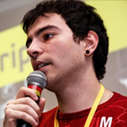

Palestrantes
-
9h00 Mantendo a produtividade e a sanidade com Jasmine
Paulo RagonhaBravi
Entusiasta pela Web, poliglota e apaixonado pelo que faz, Paulo Ragonha é um artesão de software com muita experiência em JavaScript, Ruby, Java e Python. Já trabalhou com game development, empreendeu, trabalhou na OnCast, na Globo.com e atualmente ajuda a Bravi Software a inovar na area da educação. Escritor do livro recentemente publicado 'Jasmine JavaScript Testing' pela Packt Publishing.
-
10h15 Git e Github: Dicas e Truques
Fernando DaciukVolts Digital
Especialista em desenvolvimento Frontend, trabalha com web desde 2001, especificamente com Frontend desde 2004, utilzando tecnologias como HTML5, CSS3 e Javascript. Aproveita as horas vagas para dar pitacos em projetos open source no Github e escrever para alguns blogs de tecnologia.
-

11h00 ModelCore - Agora você tem tempo pra cerveja
Klederson BuenoiFind
Arquiteto de Sistemas, Evangelista PHP, Pai, Marido, levantador de copo profissional. Ernst & Young / Axia Value Chain / Ci&T / Accenture / Inter.net / Privalia / Super Exclusivo / Coquelux / DHL / Wal*Mart / Perdigão e mais algumas outras.
-

13h30 Protocolos de comunicação: WebSockets
Jean Carlo EmerCodeminer42
Jean é gaúcho, artesão da internet, ilusionista pós-moderno, e cientista da computação. Adora aprender uma linguagem diferente, seja as do tipo que solucionam problemas aritméticos e lógicos, marcam, estilizam ou geram outras. É também um dos criadores da Rye.js e defensor da pluralidade das bibliotecas aspirantes a superar a jQuery.
-

14h30 Atomic Design com SASS
SuissaSuissa Corp
Jean Carlo Nascimento conhecido como Suissa é entusiasta da internet desde os 10 anos de idade e trabalha com sites desde os 15. Há 9 é profissional de Desenvolvimento Web, utiliza primordialmente HTML5, CSS3, AngularJs/jQuery, PHP/Node.js e Mysql/MongoDb. Sendo também evangelista de tecnologias como NoSQL e Node.js. Formado pela UTF-PR, fez especialização em Desenvolvimento Web. Atualmente trabalha como CIO do MeGaranto, CTO do Fri.la, CTO do MyBeers.io, possuindo também projetos pessoais como nosqlbr.com.br, frontendbrasil.com.br, jquerybrasil.org e javascriptbrasil.com. Sendo organizador dos eventos: Sampa.js, FrontinSampa e FrontinPG.
-
15h30 Como prototipar e desenvolver para múltiplos dispositivos
Filipi ZimermannNextt
Com 12 anos de experência com desenvolvimento para web, atualmente é Front-end Engineer e co-fundador da Nextt. Empreendedor, SCJP, SCWCD, é graduado em Sistemas de Informação pela UFSC. Entre um projeto de interfaces e outro, toca bateria na banda Da Caverna.
-
17h00 Des. Mobile Multiplataforma e OpenSource com Sencha Touch e Phonegap: Na prática!
Loiane GronerLoiane.com e Citibank
Bacharel em Ciência da Computação, trabalha como Gerente de Desenvolvimento de Projetos no Citibank (maior instituição financeira do mundo), em São Paulo. Possui 8+ anos de experiência em TI. Autora dos livros Ext JS 4 First Look, Mastering Ext JS e Sencha Architect App Development, todos publicados pela editora Packt e lançados mundialmente em inglês. Evangelista Java e Sencha Community Leader no Brasil.
-
18h00 Semântica: Uma jornada pelos componentes web
Bernard de LunaCoding on Weekend
Bernard De Luna já palestrou na HTML5DevConf em San Francisco e em mais de 50 eventos pelo Brasil, foi Team Leader de produto na Petrobras, e tem atuado nos últimos anos como Product manager, alinhando UX com códigos e processos ágeis. É um dos principais palestrantes e colunistas sobre Front-end no Brasil.
Local/Data

SENAI - CTAI
Rodovia SC-401, 3730 - Saco Grande -
Florianópolis,
SC
(Próximo ao Floripa Shopping)
Data: 22 de Novembro de 2013
Hora: das 8h às 19h
Programação
| Hora | Palestra | Descrição |
|---|---|---|
| 8h00 | Credenciamento | - |
| 9h00 | Paulo Ragonha Mantendo a produtividade e a sanidade com Jasmine | Cansado de fazer desenvolvimento orientado a debug no seu browser? Esta palestra irá demonstrar por exemplo como puxar o desenvolvimento de seu código frontend utilizando o sensacional framework de testes Jasmine. |
| 9h45 | Coffee-break | - |
| 10h15 | Fernando Daciuk Git e Github: Dicas e Truques | Github esconde alguns segredos macabros. Venha descobrir como tirar melhor proveito dessa "rede social", e de quebra aprender a usar o controle de versão mais usado atualmente no mundo: o Git! |
| 11h00 |
Klederson Bueno
ModelCore - Agora você tem tempo pra cerveja
|
O ModelCore é um ORM/Data Mapper/Active Record para AngularJS ( Javascript ) REST. Agora você pode, de forma muito fácil e simples, mapear sua API e manipular os dados nela eficientemente, sem toneladas de códigos e seguindo padrões web por padrão. |
| 12h00 | Almoço | - |
| 13h30 | Jean Carlo Emer Protocolos de comunicação: WebSockets | Qual a importância da livre troca de mensagens entre dois pontos de conexão? Entenda do TCP e HTTP e saiba da necessidade e uso de protocolos adicionais como WebSockets. Quem sabe sua aplicação possa desfrutar de novas tecnologias. Mas não sem antes escrevermos um protótipo em Node.js para provar alguns conceitos. |
| 14h30 |
Suissa
Atomic Design com SASS
|
Conheça essa nova metodologia de organização de CSS, criando elementos básico de interface e integrando-os para criar interfaces escaláveis. Porém utilizando o SASS para dar mais poder de modularidade e poder lógico para geração de um Frontend altamente padronizado e escalável. |
| 15h30 | Filipi Zimermann Como prototipar e desenvolver para múltiplos dispositivos | Nesta palestra o fundador da Nextt explica como a empresa aborda os desafios de projetar interfaces para o universo em expansão de dispositivos e as ferramentas que dão suporte para que esses projetos se tornem realidade. Está difícil fazer o seu projeto rodar em desktop e mobile? Essa palestra é pra você. |
| 16h30 | Coffee-break | - |
| 17h00 | Loiane Groner Des. Mobile Multiplataforma e OpenSource com Sencha Touch e Phonegap: Na prática! | Nessa sessão veremos uma breve introdução de dois frameworks mobile focados no mundo do HTML5. Vamos aprender também o que é necessário para desenvolver com essas ferramentas e também um estudo de caso para lhe dar uma base para desenvolver sua própria aplicação e arrasar nas App Stores. |
| 18h00 | Bernard de Luna Semântica: Uma jornada pelos componentes web | Vamos viajar pela história do HTML, aprendendo a nova semântica do HTML5 e de outras tecnologias que vão mudar o mundo. |
| 19h00 | Encerramento / Beer | - |
* Sujeito a alteração sem aviso prévio.
Ingresso
Inscrições Encerradas
Em caso de dúvidas, entre em contato pelo e-mail: contato@frontinfloripa.com.br ou com um de nossos organizadores, que se encontram no rodapé da página.